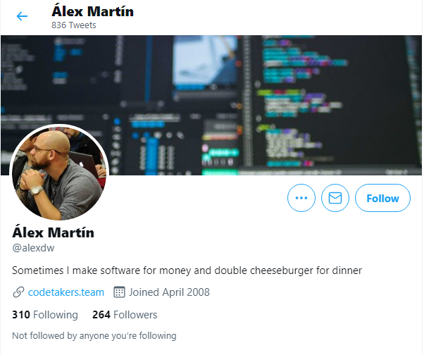

Things that spread like ShareCart win

Writing this book, which I announced in this article into which I was writing the that it was ignited by this article about Mbenda I have written, led me to write this article about shareability. Because after writing into this book this concern about these 1.7 billion people who don't have access to financial services, I provided the example of e-commerce and payment systems which I illustrated with a purchase of a book on amazon and a solution which is sharecart and how this solution could be re-engineered to target this audience of 1.7 billions of unbanked persons.
You may guess that I see the lack of access to financial services as a situation that doesn't promote diversity
Sincerely I was not willing to write about this problem of financial access but to use sharecart as the topic of the Nth article of the Greyio Heart experiment using the developer of this opencart extension as the person to talk about but I failed to identify this great software engineer because I don't know who he is between this two persons below

Then this article should have been written differently with the picture of one of these men above as the featured image like what I have done with these ones below
They all are articles about people like you that do things and works that matter for the world. By looking for all these articles I rediscovered this one
Like it was not about us who are still alive walking our way into the world but also defunct people like Tony that did great things.
with with this article about tony
Rediscovering the article about Tony Hsieh made me think that this kind of article could also be done for defunct people for honoring them but also for reminding those who care about them. This idea is added to the Greyio Heart experiment’s pile of ideas. Maybe it will have enough priority for it to be executed.
May be I am not wrong when I say I am
If you know the developer of sharecart who is behind this profile
please let me know and share this article with him because things that spread win that’s why sharecart is a great solution because it helps you share carts.
PS: The experiment continues this article is one of it and there is this great solution that targets this audience 1.7 billion unbanked persons (few of them) that we have discovered by writing this book why the credit as featured image. Will be going into this solution in the book. And this solution will be able to use this traction solution described in the article below